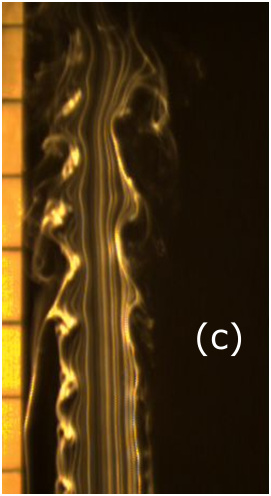
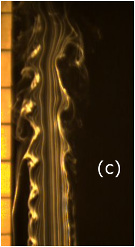
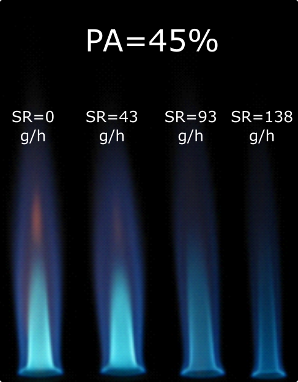
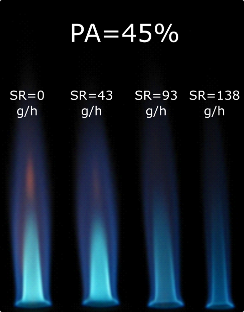
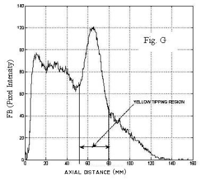
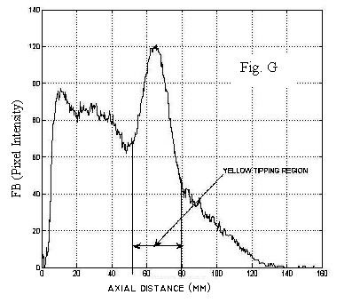

PH.D. Research
Effects of grid generated turbulence on evaporation and burning of isolated droplets in a jet flow field (JULY 2010- JULY 2017)
Abstract
Characterization of fuel droplet evaporation and burning in a turbulent flow field is of high practical importance in applications such as pre-vaporizers, diesel engines, gas turbine combustors and liquid fuel-fed furnaces. The spray droplets are often embedded in a gas-phase turbulent flow with varying turbulence intensities and scales, with respect to spatial location and time. Hence, the evaporation and burning rates of the droplets are strongly dependent on the turbulence parameters. The turbulence fluctuations caused by eddies smaller than the drop size may directly alter the heat and mass transport processes between the droplet and the surrounding gas-phase. The present study experimentally investigates the evaporation and burning rates of isolated fuel droplets kept in a well characterized turbulent air flow field. A controlled turbulent flow has been generated using grids of large solidity ratios, kept in flush at the exit plane of a round jet nozzle. The measurements of turbulence parameters have been performed using a hot-wire anemometer. A suspended droplet technique is used to investigate the effects of turbulence intensity and scales on the evaporation characteristics. Correlations have been proposed for the evaporation rate in terms of turbulence intensity and Taylor scale. The effects of turbulence on the burning characteristics of isolated droplets are investigated using the suspended droplet and porous sphere techniques. Droplets of methanol (alcohol) and n-heptane (hydrocarbon) have been used. All the experiments have been conducted in normal gravity and atmospheric pressure.
M.TECH Research
A numerical and experimental studies on the effect of LPG pilot burner on the entrained flow coal gasification system (JULY 2008-JULY 2010)
Extended Abstract
Coal is the most abundant fossil fuel that will replace all petroleum products in the future. Currently, India is the third largest producer of coal contributing 7.4% of total world’s coal production. Coal accounts for 55% of India's energy needs of which 75% is consumed by the power sector. The current way of extracting power from coal is highly inefficient and causes a threat to environment by emitting harmful pollutants. Gasification of coal is a classical method that has played a major role in the clean combustion of coal.
An advanced version known as the Integrated Gasification Combined Cycle (I.G.C.C) is one of the new invention that has attracted several industries using coal as their primary input. Gasification plays a major role in this methodology and needs more attention. Gasification reactions consist of both homogeneous and heterogeneous steps. These reactions may be exothermic or endothermic. Unfortunately during gasification endothermic reactions overweigh exothermic reactions creating an energy depravation. In order to continue the reaction a constant energy source supplying the necessary energy for the endothermic reactions is required. Wall heating, initial preheating of inlet air and pilot burners are a few of these methods employed in industries to provide the energy required for sustaining the gasification reactions. It has been noted that not much literature is available specifically, for analyzing the effect of pilot fuel on the gasification characteristics of pulverized high ash Indian sub bituminous coal.
In present study, the effect of pilot fuel (LPG) and the input parameters such as air and steam ratios on atmospheric pressure gasification are investigated through numerical simulations and the predictions are validated with experimental results. Numerical modeling is proved to be one of the major tools for generating the necessary details of the gasification characteristics even before the prototype of gasifier is erected. Numerical investigations along with the detailed combustion process analysis can be used to improve the gasifier performance. A gasifier operating with different mass flow rates of pilot fuel are compared numerically with a gasifier operating with constant wall heating. For this analysis a 16 kW capacity gasifier is considered. A steady state axi-symmetric model is developed and analyzed using FLUENT 6.3 software. The model consists of devolatilisation, combustion of volatiles, char combustion and gasification and other gas phase reactions. The continuous (gas) phase conservation equations are solved in an Eulerian frame and those of the particle phase are solved in a Lagrangian frame, with coupling between the two phases carried out through interactive source terms. The dispersion of the particles due to turbulence is predicted using a stochastic tracking model, in conjunction with the gas phase turbulent models (mainly the k-ε model). The effect of ash in the coal is assessed by suitably modifying the pre-exponential factor and diffusion rate constant in char reaction steps.
The effects of LPG (pilot fuel )on the gasification characteristics, specifically the gasifier temperature, CO, H2, CO2 and H2O mole fractions, are assessed. The simulation for this case is done with four LPG mass flow rates corresponding to 5%, 10%, 15% and 20% of total gasifier power. The experiments were conducted in a 1m length , 72mm diameter horizontal, tubular gasifier with LPG as pilot fuel, operating at atmospheric pressure. Several runs of experiment with different LPG flow rates and air ratio (the ratio of actual flow rate of air to stoichiometric air) corresponding to 0.30 were conducted. During the runs, no steam was allowed to enter the gasifier. The experimental values obtained are thus compared with numerically simulated results. It was found that the mole fraction of CO is decreasing with the increasing mass flow rates of LPG. But H2 mole fraction increased with LPG mass flow rate. The sensitivity of different devolatilisation models on gasification was found and compared with the experimental data.
The 2-Step Kobayashi model showed a good agreement with experimental data. The effects of air ratio on gasification are determined for pilot assisted gasification as well as the no pilot case numerically. In the pilot case, the CO mole fraction at the exit of the gasifier is reduced and it becomes almost nil for the air ratio of 0.45. The H2 mole fraction increases for the air ratios of 0.30, 0.35, 0.40 and slightly decreases with air ratio of 0.45, similar observations were seen in the no pilot case. The effect of steam on H2 and CO was investigated in the no pilot case. It was found that H2 mole fraction increased more rapidly but for higher steam flow rate it reduces due to flame quenching and incomplete combustion. The effect of air ratio and steam ratio on parameters like carbon conversion, higher heating value of product gas and cold gas efficiency were found out. It was found that the carbon conversion increases with air ratio, but the higher heating value of the product gas decreases along with the cold gas efficiency. At higher steam ratios the carbon conversion increases along with the cold gas efficiency. But the changes are very small indicating steam has only a minor influence on these parameters.
Mentor
Gas turbine swirl combustion
Chief Project Investigator: Anusheel Pareek, M. Tech, IIT Madras
Guide: Prof. T Sundararajan, IIT Madras.
Extended Abstract
Numerical Simulation can help in reducing the time and money spent to understand the intricacies of combustion processes inside a gas turbine combustor chamber. Geometry of combustor simulated in the present study is a 2D axis-symmetric model with fuel and primary air inlets and a concentric ring of dilution air. Swirl flow has been generated and analyzed in the annulus region by introducing primary air with axial and tangential velocity.
Turbulence is modeled using RNG k-ε, with swirl dominated, standard wall function and an unstructured mesh is employed. Mole fraction of reacting species, NOX and temperature has been analyzed with changes in critical parameters while keeping all other variables constant. These parameters were swirl intensity, temperature of inlet air and ratio of primary to secondary air. Their effect was studied on fuel mixing, flame structure and combustion dynamics.
It is observed that swirl helps in better mixing of the fuel and air, which in turn enhances the combustion process. Also, after a critical point, further increase in swirl does not alter the combustion and flame structure much. High and low values of primary to secondary air combustion show narrow reaction zones; hence an intermediate value is favored. NOX formation increases swirl intensities. Higher air inlet temperatures enhance the formation of thermal NOX.
Mentor
Effect of swirl on gasification
Chief Project Investigator: Mukkera Swamy, M.Tech, IIT Madras.
Guide: Prof. T Sundararajan, IIT Madras.
Effect of swirl flow in secondary air of an entrained flow horizontal gasifier was numerically modeled using Fluent software. Some interesting results like flame stability was studied.
Mentor
Visualization of coherent structures in free jet using smoke wire
Cheif Project Investigator: Rajasekhar, M.Tech, IIT Madras.
Guide: Dr. V Raghavan, IIT Madras.
Grids are generally employed to control the level of turbulent fluctuations inside a wind tunnel. However, their application in controlling turbulence of open free jet is quite restricted. The transition to turbulence is merely governed by the instabilities of the large scale vortical structures inherent in any shear flows. Employing grids at the exit of a nozzle issuing air jet are believed to alter these structures. In the present study, smoke wire technique is used in order to visualise the large scale structures present in the shear layer of a jet. A stream of high density smoke is generated from vaporized silicone oil applied to an electrically heated nichrome wire. The streak lines of smoke along the flow are illuminated using a halogen lamp and are captured using a high speed camera. The series of images obtained are processed using Matlab to find the vortex passing frequencies. The flow field characterization is done using a single component hot wire anemometer. The vortex passing frequencies obtained through photographs are validated against hot-wire data obtained by placing the probe at appropriate locations in the jet shear layer. The visualizations studies as well as the hot-wire measurements are carried out for three cases, viz., free jet, a free jet case with coarse grid and a free jet with a fine grid. Experiments are carried out in a specially designed low turbulence open wind tunnel issuing an axisymmetric jet. The experiments are conducted for three Reynolds number. Smaller Reynolds number near transition has been chosen, as it is reported in literature that the large scale structures are more dominant and easy to visualize.
Flow visualization has always been an important tool in fluid dynamics research and has been used extensively. For instance, in engineering, physics, metrology, oceanography to name a few. One of the main reasons for its extensive usage is unlike other techniques, which are limited to measuring flow conditions at some particular point at a time within flow field; flow visualization techniques are capable of yielding a more qualitative macroscopic picture of the overall flow field. Smoke streaks are one of the few cheap but effective visualization technique widely used inside large wind tunnels to visualize flow around complex aerodynamic structures. There are few studies were the smoke streaks are used in open jets to visualize the vortical structures in shear layers. This technique though employed in free axisymmetric and plane jets, has never been employed when grids are mounted in free jets. The exact sciences of how the grids affect the flow patterns are not clear. To confirm the visualization studies quantatively, a hot-wire anemometer is used.
Experimental Setup
Pre experimental work is completely dedicated to building the set-up. A vertical wind tunnel issuing a round axisymmetric air jet is designed and fabricated. The wind tunnel consists of a long conical diffuser at the bottom connected to a metallic vertical tube and a convergent nozzle of exit diameter (D) equal 55mm. There are series of flow straighteners, meshes coarse to fine installed inside the wind tunnel to make the turbulent intensity of the jet as small as possible. The detailed design of the setup is given in the report. Experiments are conducted in two phases 1) Visualization 2) Hot wire measurements. To visualize the flow patterns, smoke wire technique has been adopted. In smoke wire technique, a thin, electrically heated nichrome wire is stretched and held at about few mm from the jet nozzle exit. A smoke screen is generated from vaporized silicone oil applied to nichrome wire. The density and duration of smoke generation depends mainly on the voltage across the nichrome wire. So an electrical circuit is designed and fabricated in our institute to control the current passing through the wire. The smoke streaks are illuminated using a 500W yellow halogen lamp and a reflector made of thermocole. All the videos are captured using a high speed camera (FASTEC) set to record at a frame rate of 300. The images obtained are then processed in MATLAB. The RGB images are converted to gray scale images from which the variation of intensity at four different locations, viz., 0.5D, 1D, 2D and 3D are obtained with respect to time. The data obtained in time domain is transformed to the frequency domain using a Fast Fourier Transform function inbuilt in MATLAB. Same procedure has been followed for the two mesh cases. The second part of the project included validation of results obtained from visualization technique using hot wire anemometer. A Dantec made mini-CTA, is used to obtain the instantaneous velocity fluctuations in the shear layer. The hotwire is calibrated using a vertical wind tunnel and a pitot tube connected to a micro-manometer. Once the transform function is known from suitable curve fitting, the jet is checked for axisymmetry at about 0.5D. Both free jet and jet mounted with grids are found to be axisymmetric except for few undulations in coarse grid cases which eventually dies at 1D distance from the nozzle exit. The stream-wise turbulent intensities measured near the inlet are below 2% of the mean velocity incurred in the flow. Once the characterization is finished, the probe is placed at different axial locations in the shear layer. The data were sampled for 300,000 samples at rate of 20 kHz frequency (about 15 s).
Results
As the experiments were conducted with three different flow rates, only the flow corresponding to ReD=2240 is discussed below while the report includes all three cases. The following are the smoke screen images extracted from videos taken with the high speed camera at 300 fps. The background scale indicates the position in terms of axial distance (D) estimated from the nozzle exit. The streak lines are smooth leaving no traces of smoke smudges at the shear layer. But in grid mounted case streaks are wiggly. It is found that in case of coarse grids, the grids themselves cause the smoke streaks to oscillate. The large scale structures in grid mounted case are being formed in the shear layer zone but still the central core region remains unaffected by the events in the edge of the shear layer. But in case of free je the unstable structures affect the central core region. The following are the plots depicting the frequency variation for different cases at ReD =2240 probed at 0.5D, 1D, 2D and 3D.

 

The smoke streak shots for a (A) free jet, (B) a coarse grid and (C) a fine grid.
The background scale indicates the position in terms of axial distance estimated from the nozzle exit. The streak lines are smooth leaving no traces of smoke smudges at the shear layer. But in grid mounted case streaks are wiggly. It is found that in case of coarse grids, the grids themselves cause the smoke streaks to oscillate. The large scale structures in grid mounted case are being formed in the shear layer zone but still the central core region remains unaffected by the events in the edge of the shear layer. But in case of free jet the unstable structures affect the central core region.
Mentor
Studies on the effect of steam injection in a partially premixed laminar flames
Chief Project Investigator: K. Siva Krishna, M.Tech, IIT Madras.
Guide: Prof. U.S.P Shet, IIT Madras.
Extended Abstract
This study presents digital image analysis of piloted partially premixed flames of Re = 1482 issuing from a tubular burner. Flame images captured by a digital camera are processed by a MATLAB(TM) code. Axial pixel intensity plots obtained for stoichiometric and two fuel-rich flames without and with steam added to the main fuel-air mixture stream were analyzed. Steam addition is seen to alter flame structure markedly. With increase in steam flow rate, flame brightness is seen to reduce considerably: also, this was accompanied by increase in the flame height. Distinct yellow-tipping flame zone is seen to occur for percentage primary aeration, %PA < 60%. The overall flame height including the yellow-tipping zone increased at a slower rate compared to the flames without yellow-tipping. Higher value of steam flow rate led to flame-tip opening. The flame height data obtained suggest that a correlating equation can be evolved in terms of % PA and steam flow rate.

 

Fig 1: Flame images as a function of Primary Aeration (% PA) and Steam Rate, SR with Re= 1482
Fig.1 shows the flame structure as a function of primary aeration (%PA) and steam rate (SR), varied over the range [for flames (left to right)] from SR = 0, 43, 93 and 138 g/h respectively with PA% = 100, 75 and 45. In 100% primary aeration it is clear that the addition of steam increases the height of inner-core of the flame and in turn making more air to diffuse through the boundaries of the flame and ensuring complete combustion. The color of the flame turns to pale blue with increased addition of steam indirectly denoting the reduction of flame temperature.
The flame structure variation of 75% primary aerated flame for the same steam rates reveal that the inner core in this case is slightly bulging and mantle is profusely visible. It is significant to note the mantle. On addition of steam not only the color of the flame changes but also the mantle disappears with the destruction of the central inner cone. This is because the flow of steam ruptures the inner cone due to high flow rate analogy to a jet. The mantle is the result of incomplete combustion; here it vanishes with a increase in steam rate which enables complete combustion. Even the residence time is supposed to increase as the flame height increases.
It is very interesting to analyze the 45% aerated flame. The fuel richness is indicated buy the presence of yellow tipping which obviously results in the formation of unburnt carbons and carbon monoxide due to insufficient oxygen availability. It gave us an astonishing result that the yellow tipping gradually vanished for increase in addition of steam. This vanishing of yellow tip is thus validating the fact that water gas shift reaction has been promoted by the steam addition which enables the reaction to its mere completion. Similar to the previous case of primary aeration (75%) the central cone gets ruptured for higher values of steam rates and becomes analogous to a jet.

 

Fig 2: Axial distribution of Flame Brightness (FB) (Pixel Intensity) for (A) PA=100% with SR=0 g/h, (E) PA=75% with SR= 0 g/h and (G) PA=45% with SR= 0, respectively. The second peak in (G) is due to the presence of Yellow Tipping Region of the Flame.
Fig.2 (A) shows axial distribution of flame brightness FB (pixel intensity) for PA=100% with a steam rate of 0 g/h. These plots were obtained from the MATLAB code developed. The variation of flame brightness in the axial direction enables one to determine the flame height corresponding to the maximum luminosity point. Figures A to D clearly shows the drop in the FB as a consequence of steam addition. Fig.2 (E) shows the axial distribution of flame brightness FB (pixel intensity) for PA=75% with SR = 0. Fig.2 (G) depicts the axial variation of flame brightness (pixel intensity) for PA=45% with SR=0. The plot reveals interesting feature of the occurrence of yellow-tipping due to the fuel-rich condition. The second peak is due to the presence of Yellow Tipping Region of the Flame. The image processing as much as the flame visualization is useful in quantifying the extent of yellow-tipping phenomena in flames. From Fig.1 it is evident that yellow-tipping region vanishes at higher steam flow rate when the quantity of steam added is sufficient to promote the water-gas shift reaction as already discussed.
It can be concluded that the simple axial intensity plotting is a simple but remarkable technique in the determination of the flame height and the relative flame luminosity for any type of flames especially the diffusion flames (which is not discussed) where the height cannot be quantified exactly. It is here used to quantify the steam effect on flame structure with regard to yellow-tipping and flame height for partially premixed open conical flames issuing from a tubular burner. Further this technique can be used for the flame interaction studies.